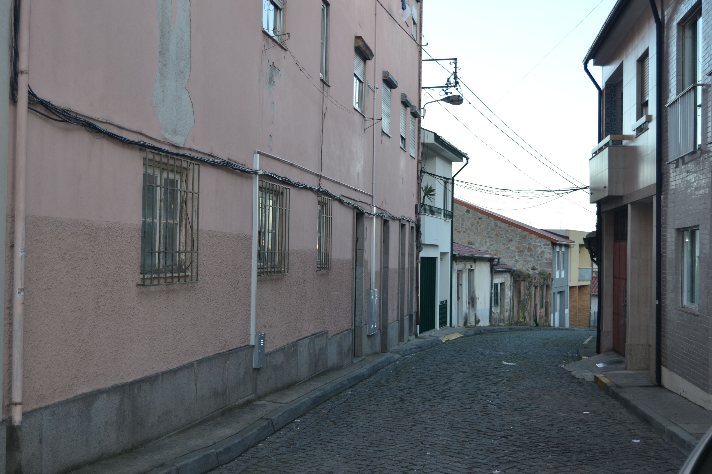

Rua das Palhotas - vista nascente.Rua das Palhotas - vista poente.Imagem atual da Rua

Imagem atual da Rua
Comprida artéria que saindo da rua dos Chãos de Sima se dirigia para o Alto Minho e que, a partir do ponto onde actualmente
bifurca, tinha o nome de rua Nova do Bico.
Desconhece-se a data da sua abertura. Há quem ponha a hipótese de que partia daqui a Geira, via militar romana que atravessando o
Gerês se dirigia a Astorga. Mas, se não serviu de estrada romana, teve ocupação medieval; antes de haver a estrada actual
(aberta ao trânsito, por troços, a partir de 1860) para o Alto Minho, passavam aqui os carros e populações que se dirigiam
para Palmeira, Pico de Regalados, etc. Esta estrada ainda em 1836 recebia reparações no seu lageado.
Em 1750, como agora, esta rua era de arrabalde. As suas casas tinham desenho tradicional. A maioria possuía apenas o piso térreo (60,2 %);
as habitações de dois pisos (37,6%) estavam, na metade Sul da rua, aliás a zona mais próxima da cidade, onde havia duas casas de três pisos e, sobretudo,
uma fonte mandada fazer em 1742 pela Câmara (que, em data recente, foi transferida para um recanto da rua Andrade Corvo).
A construção destes prédios seguia o modelo comum das zonas mais afastadas do centro, pois tinha no piso térreo uma porta ladeada de uma janela (88,2%).
As janelas ou eram vazadas (62,7 %) ou do tipo bracarense (37,3 %) cobertas ou não por gelosias.
Das 52 casas do lado Poente e 41 do Nascente, eram prazos do Cabido 31 e 17, respectivamente. As restantes eram, na sua esmagadora maioria, foreiras a
Jácome Borges Pacheco, senhor da Casa de Vale Flor, em Infias.
Estas ruas mantêm hoje as designações e seu aspecto geral. A rua Nova do Bico foi, contudo, cortada em duas, pela via de cintura da cidade,
ficando as duas partes isolados uma da outra.